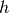
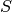
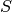
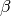
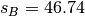
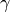
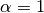

WARNING: If you decide to copy anything from this page, please do not forget to make a proper citation. Feel free to download the pdf version available here.
Introduction to the Betting Exchange¶
Filipe Funenga – Lisbon, Portugal – September 18, 2012
Abstract
A basic introduction is made to trading in a betting exchange. Beyond analysing the central system of equations for trading in its matrix form, an equation is provided aiming at a dynamic configuration of the proportion between returns. Also, various approaches are presented, denoting the possibility for a trader to manage the profits based on his expectation of the event.
Betting Exchange¶
An online betting exchange is a web service where users can, among other things, trade contracts with each other about the outcome of future random events. The pay-off of these contracts can either be some fixed amount of money or nothing at all. The main innovation of this system, compared to traditional bookmakers, lies in providing a method to set fixed odds against an outcome – known as laying – and invite other users to bet in favour of the outcome – know as backing. This type of freedom had previously been reserved only to bookmakers.
The betting exchange concept, envisioned and created by Betfair [1] in 2000, has revolutionized sports and race wagering, attracting the attention of sports bodies, major competitors and governments, who seem uncertain about how to deal with this revolutionary transaction system, as well as customers globally, who are attracted by the far superior value proposition offered. [2] Smaller companies exist but Betfair is considered to have a virtual monopoly.
In facilitating betting as a neutral intermediary the company
responsible for maintaining the exchange generates revenue by taking
a commission from the winner of the contract. This means that the
company is only interested in maximizing the amount of money
transacted between users and that it has no vested interest in the
outcome of the events. The commission charged is calculated as a
percentage of net winnings for each customer on each event, or
market. The final value that the customer will get can be calculated
with the house function,  , which is formulated in the
following manner:
, which is formulated in the
following manner:
(1)
where  is the house percentage (normally 0.05).
The neutral position makes customers, whose betting activities have traditionally been “restricted” by bookmakers (normally successful users that won too much money), able to place bets only limited by market liquidity. [3]
Decimal Odds and Probabilities¶
Traditional odds in favour of an event, , is the ratio of the probability that an event will happen to the probability that it will not happen. For example, the traditional odds that a randomly chosen day of the week is a Sunday are one to six, which is written or 1:6.
Decimal Odds, , are simpler to use than traditional ones and are the most common form of odds quoted in countries outside the UK. Unlike the traditional interpretation, the customer stake is included as part of his total return, , relating more closely to the concept of probability. In the previous example, each day of the week has decimal odds of 7.0.
The implied probability of an outcome described by decimal odds, equals 1 divided by its odds:
which concludes that everyday there is a chance of being Sunday.
This means that when a customer makes a bet, he is actually making a financial commitment about his expectations on the outcome of an event through the implied probability of the bet. As we will see in appendix Appendix A – Expected Value and Variance, the expected value of bets depend on a relation between the real probability of the event and the implicit probability of the bet.
Betting Terminology¶
Various terms are nowadays well established to characterize the way betting exchange’s customers build their sets of bets.
First of all, clear distinctions arise related to the number of betted events. If the set only backs and/or lays one event, than it is said that the costumer is Hedging. On the contrary, if more than one event is betted upon, than its called Dutching.
A particular case of Hedging is when the costumer only closes one bet. This sort of action is known as Speculating since the costumer’s (colloquially called a punter) transactions are based on hints. For instance, a punter will easily close a back bet on a single event of a soccer game and wait until the end to see the outcome.
Dutching also has a special case called Surebeting. This happens when the events betted upon are collectively exhaustive (all the possible events).
Number of Betted Events Terminology Single Hedging or Speculating Multiple Dutching or Surebeting
The closing of bets can be further distinguished based on its timing, denoting two well known fashions: Arbitrage and Trading.
In economics and finance, Arbitrage is the practice of taking advantage of a price difference between two or more markets: striking a combination of matching deals that capitalize upon the imbalance, the profit being the difference between the market prices.
In the betting exchange context, it is possible to became an Arbitrageur when the implied probabilities (see Decimal Odds and Probabilities) of all possible events sum up to more than one. For instance, in a soccer match the odds available for backing are , respectively. This results in a total probability which now allows to take profit with a Surebet. Arbitrageurs are traditionally known to perform surebets on multiple bookmakers. The same situation can be performed, although highly unlikely, with hedging.
A Trader, someone who performs Trading, takes an extra risk and closes his bets at different stages when the implied probabilities offered by the market turn out to be more favourable.
Generation of Imbalance Terminology Immediate Arbitrage Gradual Trading
The Back-Lay Pair¶
The profit/loss of back and lay bets can be represented as random variables established by a stake and an implied probability in the following manner:

where and are the implied probabilities of the bet, and the stakes. The expected value and variance of each variable are calculated in Appendix A – Expected Value and Variance.
Nowadays, in order to understand if it is possible to make profit with this pair of bets, the most common metric used is the greenbook which is defined has the situation of having positive profits in all markets (regardless to the distribution). Although this is an acceptable way of evaluating the established situation, a more generic metric will tell us if it is possible to make profit, which is not enough to satisfy a greenbook.
The following matrix form is now presented where the two possible profits can be calculated with:
(2)
where  is the profit matrix,  is the stake
matrix and
is the profit matrix,  is the stake
matrix and  is the exchange matrix built from horizontal
stack of its back and lay columns ().
is the exchange matrix built from horizontal
stack of its back and lay columns ().
With the exchange matrix is now possible to make an analysis about the value of its determinant:
This value is only positive if  which is in
fact the main objective of a trader in single event operations (in
order to make profit): contradict the nature of the market by
closing a back bet with lower probability than a lay bet, which is
the same to say a back odd higher than a lay odd.
which is in
fact the main objective of a trader in single event operations (in
order to make profit): contradict the nature of the market by
closing a back bet with lower probability than a lay bet, which is
the same to say a back odd higher than a lay odd.
Unlike a greenbook, the determinant of the exchange matrix gives us a more general definition of when the customer will be able to make profit.
Hedging¶
Let the following problem be enunciated:
Problem 1
At a time  a trader made a lay bet of €
() with a 3.15 odd (). After a
while (), the trader is able to make a back bet
with a 5.6 odd (). How much should the stake
be?
a trader made a lay bet of €
() with a 3.15 odd (). After a
while (), the trader is able to make a back bet
with a 5.6 odd (). How much should the stake
be?
A problem like this can appear when using the Lay the Draw strategy in the beginning of a soccer game. If a strong team plays against a weaker team (colloquially the underdog) than the probability that the draw at 0-0 will sustain throughout the game is naturally low. Obviously, there needs to exist an exit strategy (assume the prejudice) for the eventuality that no goal at all is scored. Another tragic eventuality that works against this strategy is when the underdog is the first to score.
The approach described in this section aims to solve Problem 1 while managing the distribution of profit/loss over all possible events in a dynamic way. Problem 1 has only two possible profits that can relate by the following proportion:
(3)
where  is a coefficient that models the proportion between profits.
In order to solve this equation, it is important to understand when the house commission is applied. In Appendix B – Back-Lay Commission Simplification, a demonstration is made proving this equation can be solved has if no commission exists. This makes it possible to define the following generic relation:
Back-Lay Proportion Rule
In order to achieve a proportion between the returns of a back-lay pair of bets, the proportion between stakes must be the following:
(4)
where and are the implied probabilities of the bets, and the stakes.
With this rule, it is now possible to manage the returns with the following five conditions.
1. ¶
The first condition is the easiest one. For this to happen one needs to solve making the second stake equal to the first. In problem Problem 1 the second stake would be €.
2. ¶
Second condition can be achieved by solving which is equivalent to have . In Problem 1 the second stake would be  €.
3. ¶
The third approach is solved making  in equation
genericTradingRelation. The last needed stake can be calculated
with:
in equation
genericTradingRelation. The last needed stake can be calculated
with:
which would give € with a profit of 41.56 € in every market.
4. ¶
is the trader’s expected probability.
In the fourth, we make . This relation
makes the expected profit the same in any possible situation. The
difficulty here, is to set the value of . A simple solution
is to use the implicit probability that the market has established
for the event at that moment: in problem Problem 1, the odd 5.6
means an implied probability of . which gives
€ with € and
€.
5. ¶
where  is a
bias operator provided in the following manner:
is a
bias operator provided in the following manner:
where  is an unknown central profit.
An expected, and obvious, result is that when this relation becomes the same as if .

References¶
| [1] | http://www.betfair.com/ |
| [2] | Mark Davies, Leyland Pitt, Daniel Shapiro, and Richard Watson. Betfair.com: Five technology forces revolutionize worldwide wagering. European Management Journal, 23:533–541, 2005. |
| [3] | Des Laffey. Entrepreneurship and innovation in the uk betting industry: The rise of person-to-person betting. European Management Journal, 23:351–359, 2005. |
Appendix A – Expected Value and Variance¶
First we need to suppose a value to the real probability that the
event will happen, . Normally a simple solution is to use
the implied probability that the market has established for the
event at that moment. More complex approaches can be made with the
retrieval of probabilistic information from external sources to the
exchange or with the estimation of a trend of the market.
The expected value of a bet is normally called the value of the bet. This term is unfortunate since it is easily confused with the stake of the bet in languages other than English.
![E \left[ Lay(p_{L},s_{L}) \right] = \mu_{L} = P \times s_{L} \frac{p_{L}-1}{p_{L}} + (1-P) \times (s_{L}) = s_{L} \left( 1 - \frac{P}{p_{L}} \right)](_images/math/b2cb2095bec2e186eddc0e898de2271bd67267cc.png)
Appendix B – Back-Lay Commission Simplification¶
Observing the behaviour of in equation tradingeq, the
following conditions are easily noted:
Equation tradingeq can now be rewritten in the following way:
(5)
where  is
is
The problem now is that and depend on the values of the stakes, which are the values we are trying to model. This said, both conditions will be solved in order to the implicit probabilities. Equation alphaBetaTrading can be simplified to the following form:
The first condition becomes:
And the second:
Concluding that which tells us that .